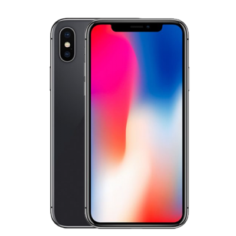
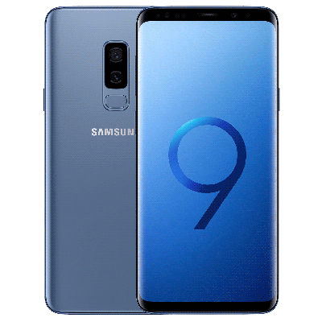

|  |
There are a lot of pros and cons for both devices but after all, it is up to preference which of the two phones would better fit you. Some people will like the iPhone X because of its thinner design and slick look, some people might choose the Galaxy S9+ over the iPhone because of its better specs.
While there might be many agruments which of the two phones is better I would personally take the Samsung Galaxy S9+. Yes, I have been a huge apple fan all my life, but honestly, now that I have grown up a little and I am can have my own opinion and thoughts, Samsungs specs beat the iPhone X big time. I personally, feel like I need a change and switching from Apple to Samsung might be the first step. After all, once again there might be many agruments over which phone is better but I honestly feel like if you are planning to buy yourself a new phone that, Samsung Galaxy S9+ should be your choice! |
 |